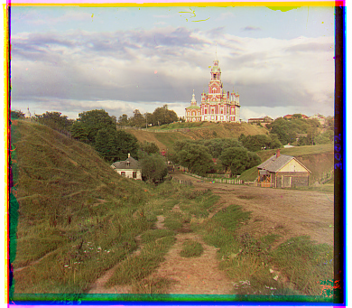

Project 1
Naive Implementation
r: [4, 1], b: [-3, -3]
r: [6, 1], b: [3, -2]

r: [7, 1], b: [-5, -2]
Pyramid Optimization
r: [33, -7], b: [-10, 10]
r: [57, 17], b: [-49, -24]
r: [65, -3], b: [-60, -16]
r: [48, 5], b: [-40, -17]
r: [39, 14], b: [-38, -20]
r: [78, -7], b: [2, 2]
r: [52, -12], b: [-41, 13]
r: [96, 3], b: [-81, -3]
r: [97, 7], b: [-78, -14]
r: [46, -18], b: [-50, 6]
r: [58, -2], b: [-54, -12]
Verification
r: [76, 10], b: [-62, -29]
r: [59, 14], b: [-52, -2]
r: [70, -14], b: [-59, 2]
r: [57, -6], b: [-48, -1]